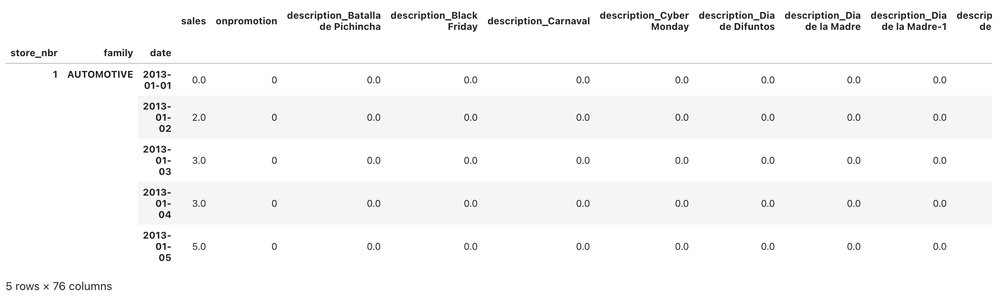
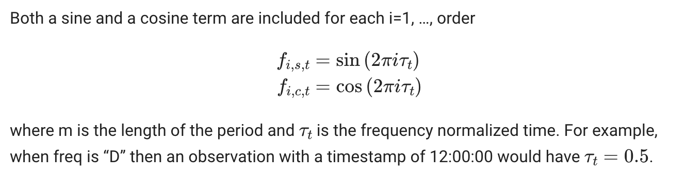
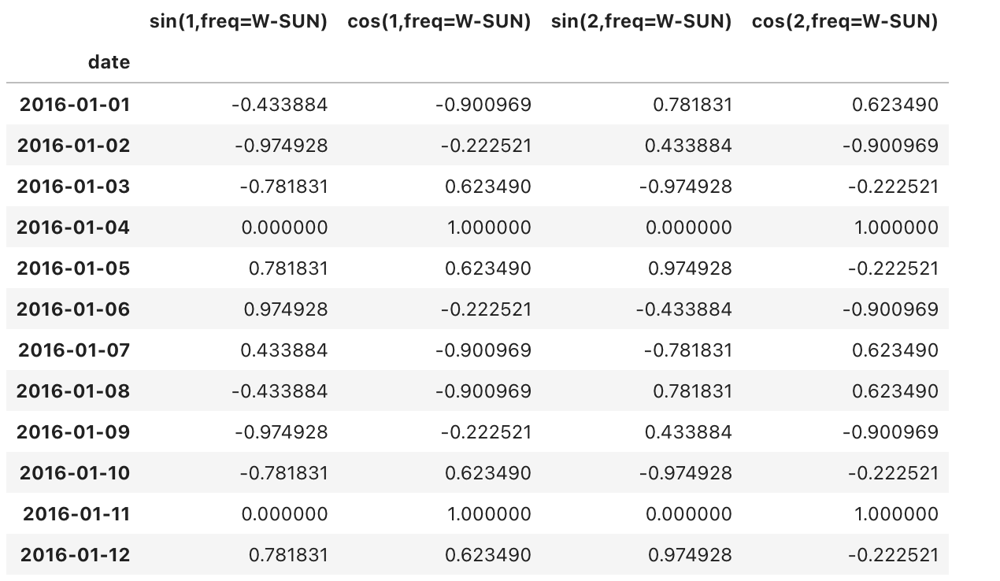
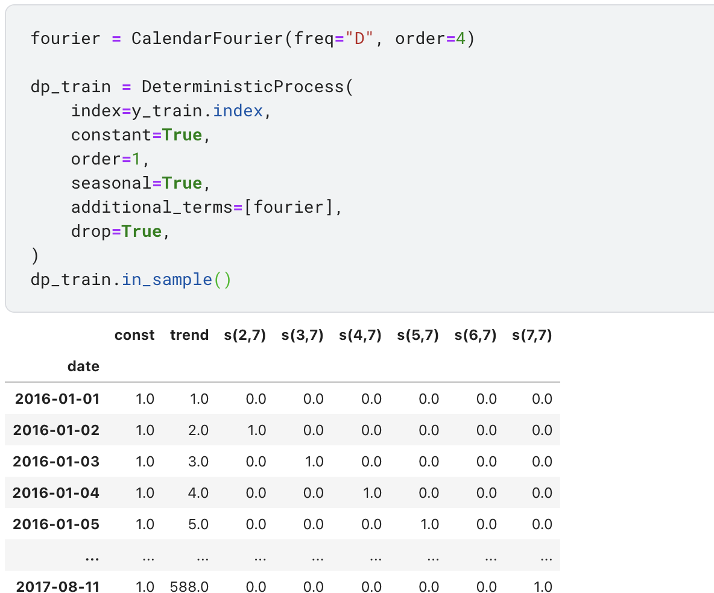

继续上次的TimeSeries问题,这次看的notebook是另一个人写的hybridmodel
preprocessing
首先前面数据处理和表合并部分大同小异. 1
2
3
4
5
6
7
8
9
10
11
12
13
14
15
16
17
18
19
20
21
22
23
24
25
26
27
28
29
30
31
32
33
34
35
36
37
38
39
40
41
42
43
44
45
46
47
48
49
50
51
52
53
54
55
56
57
58
59
60
61
62
63
64
65
66
67
68
69
70
71from pathlib import Path
import numpy as np
import pandas as pd
import matplotlib.pyplot as plt
from sklearn.linear_model import LinearRegression
from sklearn.multioutput import RegressorChain
from sklearn.preprocessing import LabelEncoder
from xgboost import XGBRegressor
from sklearn.multioutput import RegressorChain
from sklearn.model_selection import train_test_split
from sklearn.metrics import mean_squared_log_error
from statsmodels.tsa.deterministic import DeterministicProcess, CalendarFourier
from sklearn.preprocessing import OneHotEncoder
# Input data files are available in the read-only "../input/" directory
# For example, running this (by clicking run or pressing Shift+Enter) will list all files under the input directory
import os
for dirname, _, filenames in os.walk('/kaggle/input'):
for filename in filenames:
print(os.path.join(dirname, filename))
comp_dir = Path('../input/store-sales-time-series-forecasting')
# Importing oil prices dataset
oil_prices = pd.read_csv("/kaggle/input/store-sales-time-series-forecasting/oil.csv",
parse_dates=['date'],
infer_datetime_format=True)
oil_prices['date'] = oil_prices.date.dt.to_period("D")
oil_prices.set_index('date', inplace=True)
# Importing holidays dataset
holidays = pd.read_csv('/kaggle/input/store-sales-time-series-forecasting/holidays_events.csv',
parse_dates=['date'],
infer_datetime_format=True)
holidays['date'] = holidays.date.dt.to_period('D')
store_sales = pd.read_csv(
comp_dir / 'train.csv',
usecols=['store_nbr', 'family', 'date', 'sales', 'onpromotion'],
dtype={
'store_nbr': 'category',
'family': 'category',
'sales': 'float32',
'onpromotion': 'uint32',
},
parse_dates=['date'],
)
store_sales['date'] = store_sales.date.dt.to_period('D')
store_sales = store_sales.set_index(['store_nbr', 'family', 'date']).sort_index()
family_sales = (
store_sales
.groupby(['family', 'date'],observed=False)
.mean()
.unstack('family')
.loc['2017']
)
test = pd.read_csv(
comp_dir / 'test.csv',
dtype={
'store_nbr': 'category',
'family': 'category',
'onpromotion': 'uint32',
},
parse_dates=['date'],
)
test['date'] = test.date.dt.to_period('D')
test = test.set_index(['store_nbr', 'family', 'date']).sort_index()
1 | #Splitting the holidays in three dataset on the basis of locale |
这里时间还是按照week,month,year做了列分割,不过需要注意的是这里作者对holiday进行了one_hot_encoding,所以后面查看数据会有70多列. 
statsmodels相关
再后面作者写了一个hybrid模型,有点残差网络的意思,不过这个先放一放,先看看statsmodels.tsa.deterministic的相关内容,首先是statsmodels.tsa.deterministic.CalendarFourier,这个函数可以按日历生成相关傅立叶级数.

举个例子 1
2
3
4
5
6
7
8
9
10fourier = CalendarFourier(freq="W", order=2)
dp_train = DeterministicProcess(
index=y_train.index,
constant=True,
order=1,
seasonal=True,
additional_terms=[fourier],
drop=True,
)
fourier.in_sample(y_train.index)[:20]
过一天到达周二就会令$ \tau = 1$, 即sin值变为
$sin(order* \pi * \frac{1}{7})$ ,
所以也有了下面这些计算
1 | import math |

然后是DeterministicProcess的处理 
这里指定了season,然后season是依据index来判断的 1
2
3
4# https://www.statsmodels.org/devel/_modules/statsmodels/tsa/deterministic.html#DeterministicProcess
if (seasonal or fourier) and period is None:
if period is None:
self._period = period = freq_to_period(self._index_freq)
其中我们的index_freq为day,跳转到freq_to_period 1
2
3
4
5
6
7
8
9
10
11
12
13
14
15# https://www.statsmodels.org/dev/_modules/statsmodels/tsa/tsatools.html
if freq in ("A", "Y") or freq.startswith(yearly_freqs):
return 1
elif freq == "Q" or freq.startswith(("Q-", "QS", "QE")):
return 4
elif freq == "M" or freq.startswith(("M-", "MS", "ME")):
return 12
elif freq == "W" or freq.startswith("W-"):
return 52
elif freq == "D":
return 7
elif freq == "B":
return 5
elif freq == "H":
return 24
即可发现是相当于period为7的seasonal. 不过这里fourier并没有作为额外项加入,个人也不太理解出于什么考虑. 然后获取数据加丢入模型的代码如下,数据处理过程分析好了喂数据反而简单了.
1 | #Linear Regression |
prepare training data for hybrid model
1 | # For the first model : |
hybrid model
到这里我们再回过头看最终预测的模型的结构, 这里看到模型1做对y的预测,
模型2在得到y和y_pred之后,对其差值进行预测,即我之前说的有点像残差网络.
1
2
3
4
5
6
7
8
9
10
11
12
13
14
15
16
17
18
19
20
21
22
23
24
25
26
27
28
29
30
31
32
33
34
35
36
37
38
39
40
41
42
43
44
45
46
47
48
49
50
51
52
53
54
55
56
57
58
59
60
61
62
63
64
65
66
67
68
69
70
71
72def make_lags(ts, lags, lead_time=1):
return pd.concat(
{
f'y_lag_{i}': ts.shift(i)
for i in range(lead_time, lags + lead_time)
},
axis=1)
def make_multistep_target(ts, steps):
return pd.concat(
{f'y_step_{i + 1}': ts.shift(-i)
for i in range(steps)},
axis=1)
# Compute RMSLE
def rmsle(y_true, y_pred):
return np.sqrt(mean_squared_log_error(y_true, y_pred))
class BoostedHybrid:
def __init__(self, model_1, model_2):
self.model_1 = model_1
self.model_2 = model_2
self.y_columns = None # store column names from fit method
def fit(self, y,X_1, X_2):
self.model_1.fit(X_1, y)
y_fit = pd.DataFrame(
# YOUR CODE HERE: make predictions with self.model_1
self.model_1.predict(X_1),
index=X_1.index, columns=y.columns,
)
y_fit = y_fit.stack(future_stack=True)
y_fit =y_fit.stack(future_stack=True)
y_fit =y_fit.reset_index()
y_fit['sales'] = y_fit['sales'].astype('int64')
y_bis = y.stack(future_stack=True)
y_bis =y_bis.stack(future_stack=True)
y_bis = y_bis.reset_index()
y_resid = y_bis['sales'] - y_fit['sales']
self.model_2.fit(X_2, y_resid)
# Save column names for predict method
self.y_columns = y.columns
# Save data for question checking
self.y_fit = y_fit
self.y_resid = y_resid
def predict(self, X_test_1):
y_submit = pd.DataFrame(self.model_1.predict(X_test_1), index=X_test_1.index, columns=y.columns)
y_submit = y_submit.stack()
y_submit = y_submit.stack()
X_test_2 = y_submit
X_test_2 = X_test_2.reset_index(['family','store_nbr'])
X_test_2['day'] = X_test_2.index.dayofweek
X_test_2 = X_test_2.drop('sales',axis =1)
for colname in X_test_2.select_dtypes(["object", "category"]):
X_test_2[colname], _ = X_test_2[colname].factorize()
y_test = self.model_2.predict(X_test_2) + y_submit['sales']
y_test = y_test.reset_index()
y_test = y_test.set_index(['store_nbr', 'family', 'date']).sort_index()
return y_test # long to wide
定义结束了后续填充模型即可 1
2
3
4
5
6
7
8
9
10
11
12
13
14
15
16# Fit the model
# Model 1 (trend)
from sklearn.linear_model import ElasticNet, Lasso, Ridge
# Model 2 (residuals)
from sklearn.ensemble import ExtraTreesRegressor, RandomForestRegressor, GradientBoostingRegressor
from sklearn.neighbors import KNeighborsRegressor
from sklearn.neural_network import MLPRegressor
model_hybrid = BoostedHybrid(
Ridge(),
RandomForestRegressor()
)
model_hybrid.fit(y,X_1,X_2)
最后对submission的处理进行处理并丢进模型预测,输出存submission
1
2
3
4
5
6
7
8
9
10
11
12
13
14
15
16
17
18
19
20# Preparing data for submission
df_test = pd.read_csv(
'/kaggle/input/store-sales-time-series-forecasting/test.csv',
dtype={
'store_nbr': 'category',
'family': 'category',
'onpromotion': 'uint32',
},
parse_dates=['date'],
)
df_test['date'] = df_test.date.dt.to_period('D')
df_test = df_test.set_index(['store_nbr', 'family', 'date']).sort_index()
X_test_1 = dp.out_of_sample(steps=16)
X_test_1.index.name = 'date'
X_test_1['NewYear'] = (X_test_1.index.dayofyear == 1)
sub = model_hybrid.predict(X_test_1).clip(0.0)
sub = sub.join(df_test.id).reindex(columns=['id', 'sales'])
sub.to_csv('submission.csv', index=False)